第 9 章
ブラウザとフィーチャの管理
この章では、ブラウザでフィーチャの履歴を管理する方法を説明します。履歴の途中までを確かめ、順序を入れ替え、フィーチャを抑制し、フォルダで整理し、切れた参照を直せるようになります。ブラウザの基本は第 1 章にあります。この章の写真は、おもに samples/parametric_plate.mcad（板の幅・穴の個数が式で決まる題材）で撮りました。
9.1 ブラウザの見方
ブラウザは、パーツを作った順（履歴）にフィーチャを並べます。部品の行の下は、［ソリッド ボディ］・［原点］・履歴のフィーチャ（スケッチを含む）・［パーツの終端］・［作業フィーチャ］・［計測］の順です。列は［フィーチャ］（名前）・［種類］・［状態］の 3 つです。

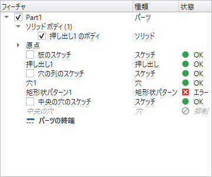
| 状態 | 印 | 意味 |
|---|---|---|
| ［OK］ | 塗りつぶしの緑の丸 | 正しく計算できています |
| ［警告］ | 三角 | 計算はできましたが、確かめることがあります（ツールチップに理由） |
| ［エラー］ | 四角に × | 計算できません（ツールチップに理由） |
| ［抑制］ | 白抜きの丸に斜線 | 利用者が一時的に無効にしています |
| ［ロールバック］ | 下向きの三角 | ［パーツの終端］より後ろにあり、計算されません |
| ［未計算］ | 点線の丸 | 途中で計算を止めたため、まだ計算していません |
| ［計算中］・［保留］ | 砂時計 | 計算の途中です。結果が古くなっていて、再計算を待っているときは［保留］です |
| ［中断］ | 白抜きの丸 | 利用者が計算を中断しました |
| ［隔離中］ | 盾 | 計算エンジンを異常終了させた演算なので、計算しないようにしています |
| ［プラグインなし］ | 四角に ? | このフィーチャの種類を扱うプラグインが入っていません |
参照が見つからないフィーチャは、状態の印の右下に、見つからない参照の数が出ます（参照の修復）。
行にカーソルを合わせると、ツールチップに状態・理由・参照している行（「参照」）・使っている行（「使用先」）・コメントが出ます。ビューでは、その行のフィーチャが作った面が光ります。
行をクリックすると、ビューで選ばれます。ビューで面を選ぶと、それを作ったフィーチャの行が強調されます。
行をダブルクリックすると、フィーチャの編集が始まります。スケッチの行は、スケッチの編集です。
行を右クリックすると、この章のコマンドのメニューが出ます。

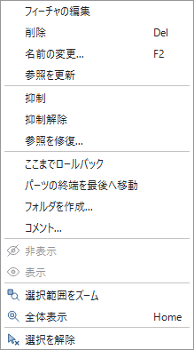
| コマンド | 動き | 節 |
|---|---|---|
| ［新しいスケッチ］ | 作業平面の行（と、［原点］の平面の行）で使います。その平面にすぐスケッチを始めます。メニューの先頭に出ます | 第 4 章 |
| ［フィーチャの編集］ | フィーチャの編集を始めます（行のダブルクリックと同じ） | 各フィーチャの章 |
| ［スケッチを編集］・［スケッチ平面を再定義］ | スケッチの行で使います。スケッチを編集する・スケッチを描く平面を別の平面や面に替える | 第 4 章 |
| ［削除］ | フィーチャを削除します。ほかのフィーチャが使っているときは扱いを尋ねます | フィーチャを削除するとき |
| ［名前の変更］・［コメント］ | 名前とコメント | 名前とコメント |
| ［抑制］・［抑制解除］ | 抑制と、その解除 | 抑制 |
| ［参照を修復］・［参照を更新］ | 切れた参照を直す | 参照の修復 |
| ［ここまでロールバック］・［パーツの終端を最後へ移動］ | パーツの終端をそこへ置く・最後へ戻す | パーツの終端 |
| ［フォルダを作成］ | 選んだフィーチャをフォルダにまとめます | フォルダ |
| ［非表示］・［表示］・［選択範囲をズーム］・［全体表示］・［選択を解除］ | 表示の操作。ビューのメニューと同じです | 第 2 章 |
ビューで面・エッジを右クリックすると、右クリックした要素が選ばれてから、メニューが出ます（何も選んでいなくてもかまいません。すでに選んでいる要素を右クリックしたときは、選択はそのままです）。このメニューには、その面を作ったフィーチャを編集するコマンド（［フィーチャの編集］。名前が［押し出し1 の編集］のように出ます）と、スケッチを編集するコマンド（［スケッチを編集］）があります。選んだのが平らな面なら、その次に［新しいスケッチ］もあります（曲面・エッジでは出ません）。
［原点］の［XY 平面（上面）］・［XZ 平面（正面）］・［YZ 平面（右側面）］の行を右クリックしたメニューは、先頭が［新しいスケッチ］で、続けて［非表示］・［表示］・［全体表示］・［選択を解除］です。原点の軸・点の行には［新しいスケッチ］は出ません。
9.2 パーツの終端でロールバックする
ブラウザの［パーツの終端］は、履歴の「ここまでを計算する」という印です。上へドラッグすると、それより後ろのフィーチャは計算されません。途中の形を確かめたり、途中にフィーチャを足したりするときに使います。
ドラッグで動かす
ブラウザの［パーツの終端］の行を、戻したい位置のフィーチャの上へドラッグして落とします。ドラッグ中は、落とせる位置に線が出ます。
終端より後ろのフィーチャは、灰色の斜体で［ロールバック］になります。ビューは、終端までの形になります。
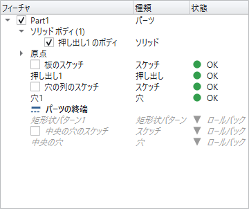
図 9-3 ［パーツの終端］を［矩形状パターン1］の上へドラッグしたところ。後ろの 3 行が［ロールバック］です。


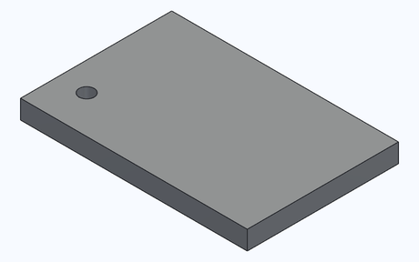
右クリックで動かす
フィーチャの行を右クリックし、［ここまでロールバック］を選ぶと、そのフィーチャの直後まで計算します。
［パーツの終端］の行か、フィーチャの行を右クリックして［パーツの終端を最後へ移動］を選ぶと、すべてのフィーチャを計算する状態に戻ります。

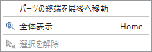
新しいフィーチャは、終端の直前に入ります。終端を途中に置いてスケッチや押し出しを作ると、履歴のその位置に挿入されます。終端は動きません。
終端の位置はドキュメントに保存されます。開き直しても同じ位置です。
終端の動きは 1 回が 1 つの Undo の項目です。
終端は、最初のフィーチャの上（何も計算しない状態）にも置けます。
9.3 フィーチャを並べ替える
履歴の順序は、ブラウザの行のドラッグで入れ替えられます。順序が変わっても形が同じなら、そのまま確定します。
動かすフィーチャの行を選びます。複数動かすときは、Ctrl を押しながらクリックして選び足します。
行をドラッグして、2 つのフィーチャの間（行と行の境目）に落とします。
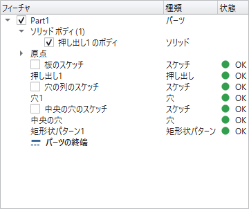
図 9-7 ［中央の穴のスケッチ］と［中央の穴］を、［矩形状パターン1］の上へ動かしたところ。形は変わりません。

動かすと、あるフィーチャが、それが使う（参照する）フィーチャより前に来てしまうときは、落とせません。禁止のカーソルになり、ツールチップに理由が出ます。例えば、［穴1］を、その位置のスケッチ［穴の列のスケッチ］より前へは動かせません。

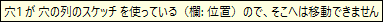
9.4 フィーチャを抑制する
抑制は、フィーチャを履歴に残したまま、一時的に無効にします。穴やフィレットを外した形を確かめたいときに使います。
ブラウザのフィーチャの行（複数でもかまいません）を右クリックし、［抑制］を選びます。
行が灰色の斜体になり、［状態］が［抑制］になります。ビューから、そのフィーチャの形が消えます。
戻すときは、同じ行を右クリックして［抑制解除］を選びます。
抑制したフィーチャを使っている後ろのフィーチャは、［エラー］になります。例えば［穴1］を抑制すると、それをパターンにした［矩形状パターン1］は計算できなくなります。抑制を解除すると直ります。
抑制と解除は、1 回が 1 つの Undo の項目です。
プロパティ パネルの［属性］のタブにある［抑制］のチェックでも、同じ操作ができます（インスペクタ）。
構成（第 11 章）では、メンバーごとに抑制を決められます。
9.5 フォルダで整理する
フィーチャが多いときは、フォルダにまとめて、ブラウザを見やすくします。フォルダは履歴の順序を変えません。
フォルダに入れるフィーチャの行を選びます（Ctrl を押しながらクリックで複数）。
右クリックして［フォルダを作成］を選びます。
名前を入力して確定します。既定の名前は［フォルダ1］、［フォルダ2］…と、使われていない番号です。
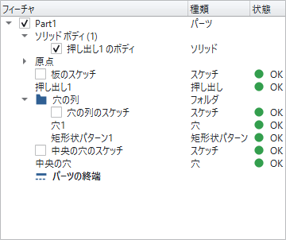
図 9-9 3 つのフィーチャをまとめた［穴の列］フォルダ。フォルダの左の三角で開閉します。


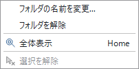
名前を変える: フォルダの行を選んで F2（または［フォルダの名前を変更］）。フォルダの行のダブルクリックは開閉です。
解除する: フォルダの行を右クリックして［フォルダを解除］。フォルダの中のフィーチャは外に出て、フォルダだけが消えます。
出し入れする: フィーチャの行をフォルダの上や中へドラッグすると入り、外へドラッグすると出ます。
入れ子にする: フォルダの中のフィーチャを選んで［フォルダを作成］すると、そのフォルダの中に新しいフォルダができます。
9.6 名前とコメント
フィーチャには、わかりやすい名前とコメントを付けられます。
フィーチャの行を選んで F2（［名前の変更］）を押し、新しい名前を入力します。
コメントは、右クリックの［コメント］で入力します。複数行を書けます。空にすると消えます。
コメントは、行のツールチップと、プロパティ パネルの［属性］のタブの［コメント］に出ます。名前もコメントも、1 回の変更が 1 つの Undo の項目です。
9.7 親子の強調
フィーチャは、ほかのフィーチャの結果（スケッチ・面・パラメータ）を使って作られます。使われる側を親、使う側を子と呼びます。フィーチャを選ぶと、親と子の行が、別の色と形で強調されます。

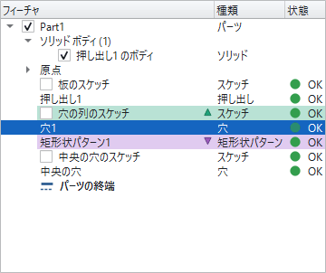
同じ内容は、行のツールチップの「参照」（親）・「使用先」（子）と、プロパティ パネルの［属性］のタブの［依存元］・［依存先］にも出ます。フィーチャを変更・削除・抑制したときに、どこまで影響するかを事前に確かめられます。
9.8 表示・非表示と、使われたスケッチ
ブラウザの行の左のチェックで、ボディ・スケッチ・作業フィーチャ・原点の表示と非表示を切り替えます。リボンの［表示］タブにも同じコマンドがあります（第 2 章）。
フィーチャが使ったスケッチ（押し出しのプロファイルなど）は、作った後は隠れます。ブラウザの行のチェックが外れています。もう一度出して、寸法を確かめたいときは、次のようにします。
ブラウザで、隠れているスケッチの行をクリックして選びます。
リボンの［表示］タブ →［表示設定］パネル →［表示］をクリックします（右クリックのメニューの［表示］でも同じです）。
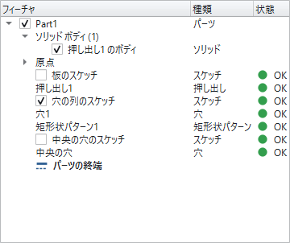
図 9-12 ［穴の列のスケッチ］のチェックが入りました。


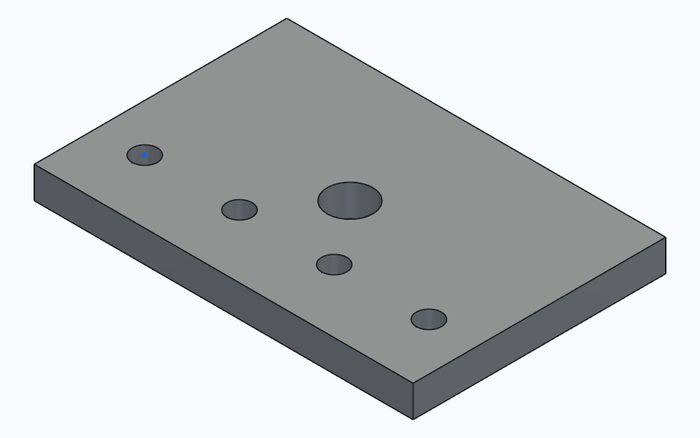
9.9 参照の修復
フィーチャは、面・エッジ・頂点を名前で覚えています。上流のフィーチャを変えると、その面やエッジが無くなったり、同じ形のものが複数になったりして、後ろのフィーチャが覚えていた参照を見つけられなくなることがあります。
参照が見つからないフィーチャは、［状態］が［エラー］か［警告］になり、印の右下に見つからない参照の数が出ます。ツールチップに、どの参照かが書かれます（「参照が見つかりません: 板 の側面（スケッチ1 の線 4 から） と … の間のエッジ」）。

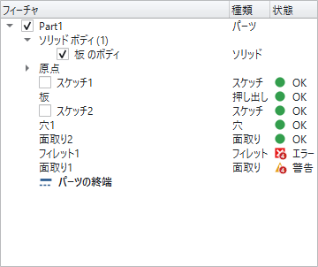
plate_with_holes.mcad）。［フィレット1］は参照が 4 つ見つからず［エラー］、［面取り1］は［警告］です。修復のダイアログで直す
ブラウザのフィーチャを右クリックして［参照を修復］を選びます。一覧のダイアログが開きます。このダイアログは、開いたまま、ブラウザの行やビューを操作できます。
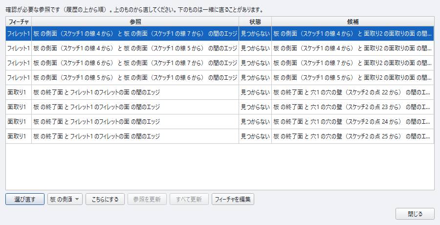
図 9-15 参照の修復。［見つからない］参照が、履歴の上から順に並びます。 一覧の行を選びます。［候補］の欄に、近い形の参照が出ます。
候補を選んで、［こちらにする］を押します。その行は一覧から消え、フィーチャが再計算されます。
候補に合うものがないときは、［選び直す］を押します。ダイアログの上の説明が「ビューでエッジを選択してください」のように替わるので、ダイアログを開いたまま、ビューで面・エッジ・頂点（行と同じ種類）をクリックします。クリックした要素が、その行の参照になります。
上の行から順に直します。上流が直ると、下の行は自然に直ることがあります。［形状から見つけ直した］行は、形で見つけ直した参照です。［参照を更新］（選んだ行）か［すべて更新］で、今の解決先を参照として保存します。
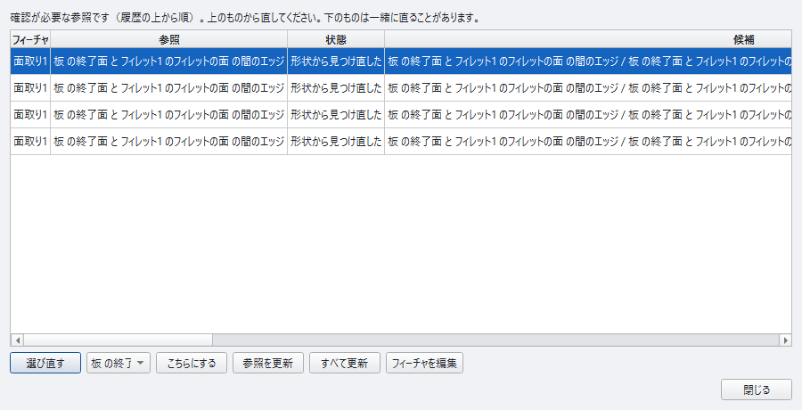
図 9-16 ［フィレット1］の 4 つの参照を直すと、［フィレット1］が［OK］になり、［面取り1］の参照が［形状から見つけ直した］になりました。 すべての行が消えると、「すべての参照は正常です。」と出ます。
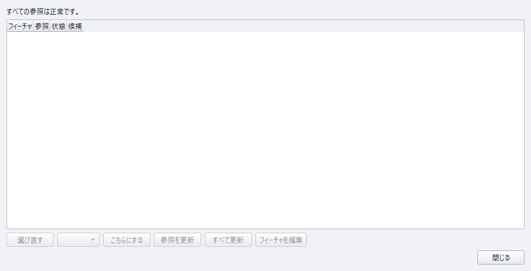
図 9-17 ［すべて更新］の後。一覧は空になりました。


| 状態 | 意味 | 直し方 |
|---|---|---|
| ［見つからない］ | 参照が無くなりました | ［こちらにする］（近い候補があるとき）か［選び直す］ |
| ［形状から見つけ直した］ | 名前では見つからず、形から見つけ直しました | 確かめて［参照を更新］ |
| ［候補が複数あります］ | 同じ形の候補が複数あり、決めきれません | 候補を選んで［こちらにする］、または［参照を更新］ |
プロファイルやデータム（作業平面など）の参照は、［選び直す］では直せません。［フィーチャを編集］を押して、フィーチャのフォームで選び直します。1 回の操作が 1 つの Undo の項目です。
フィーチャを削除するとき
ほかのフィーチャが使っているフィーチャを［削除］（Del）で消そうとすると、使っているフィーチャの一覧と、扱いの選択が出ます。

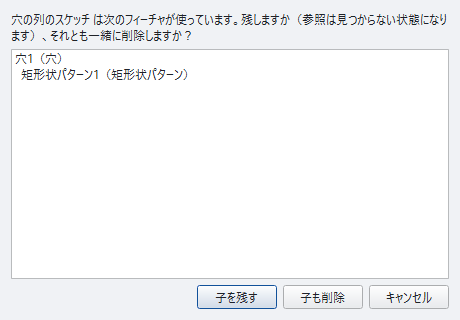
［子を残す］: 使っているフィーチャは残し、参照が見つからない状態にします。あとで修復のダイアログで直します。
［子も削除］: 使っているフィーチャも一緒に消します。
［キャンセル］: 何もしません。
9.10 インスペクタ（プロパティ パネル）
ブラウザでフィーチャを 1 つ選ぶと、プロパティ パネルにインスペクタが出ます。［パラメータ］と［属性］の 2 つのタブがあります。

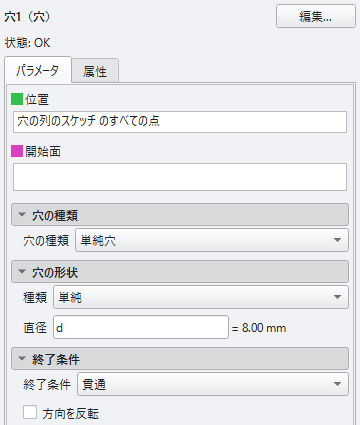

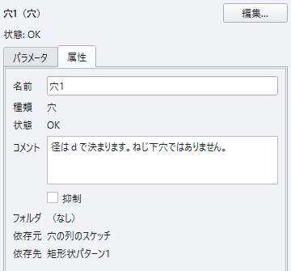
［名前］・［コメント］・［抑制］は、入力が終わるたびに確定します（1 回が 1 つの Undo の項目）。
［種類］・［状態］・［フォルダ］・［依存元］・［依存先］は読むだけです。
入力の途中でほかの行を選ぶと、その欄は確定されます。拒否された値は理由が欄の下に出て、元の値に戻ります。
9.11 元に戻す・やり直しと変更履歴
［元に戻す］（Ctrl+Z）と［やり直し］（Ctrl+Y）は、クイック アクセス ツールバーの矢印のボタンでも使えます。この章のコマンドは、どれも 1 回の操作が 1 つの項目です。フィーチャの作成・編集、パラメータの変更、名前の変更、終端の移動、並べ替え、抑制などを、1 つずつ戻せます。戻せる回数は、［オプション］の［元に戻せる回数］で決めます（既定は 200 回。変えた値は、あとから開くドキュメントに効きます）。
どの操作を戻すかは、変更履歴で確かめられます。
リボンの［表示］タブ →［ウィンドウ］パネル →［変更履歴］をクリックします。右にドックが出ます。もう一度押すと隠れます。
操作の名前が、古い順に並びます。先頭は［初期状態］（開いた時点）です。今の位置は太字と右向きの三角で出ます。
行をクリックすると、その時点の状態に戻ります（Ctrl+Z を何回か押したのと同じ）。
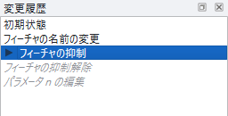
図 9-21 変更履歴。3 番目の項目（［フィーチャの抑制］）まで戻したところ。後ろの行は灰色の斜体で、クリックでやり直せます。